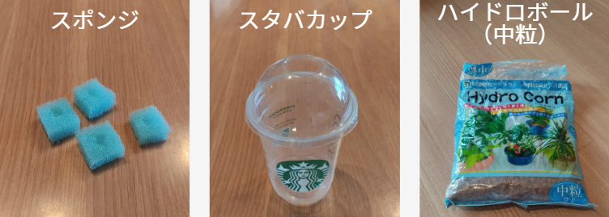
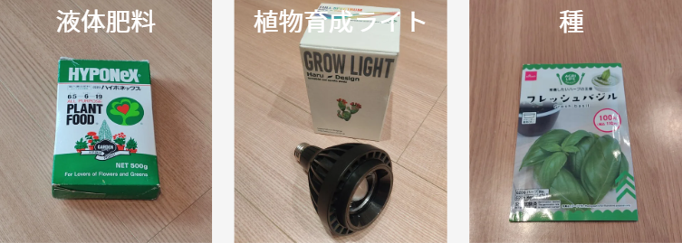
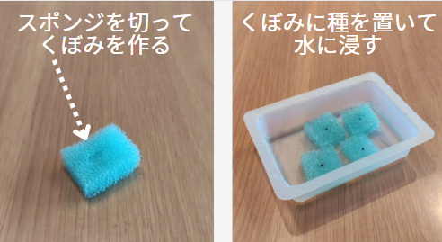
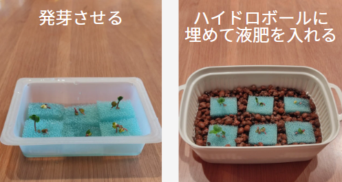

スタバカップでバジルを育てる
本記事では、スタバのカップを使って、水耕栽培で「バジル」を育てます。
バジルは比較的育てやすいハーブで生命力も強く、初心者でも成功しやすいです。
育てたバジルの葉は、ピザ、サラダ、サンドイッチなど、さまざまな料理に利用できます。
また、使いたいときに葉っぱを収穫して新鮮なうちに使うことができますので、料理の楽しみも増えます。
簡単ですので是非育ててみてください！
0. 用意するもの
- スポンジ
- スタバカップ
- ハイドロボール中粒
- 液体肥料「微粉ハイポネックス」
- 植物育成ライト
- バジルの種


■ハイドロボール
培地として使用します。
今回は中粒を使用しています。
ホームセンターや100円ショップで購入できます。
■液体肥料
有名なのは上記の「微粉ハイポネックス」か「ハイポニカ液体肥料」で、どちらを使ってもOKです。
こちらもホームセンターで売っています。
■植物育成ライト
水耕栽培向けのものが数千円で買えるので、amazonなどで見てみてください。
私は以下のものを使っています。光の広がりを調整できるタイプで、意外と便利です。
1. 種をスポンジに撒いて発芽させる
スポンジを小さく切って真ん中にくぼみを作り、そこに種を撒きます。
その後、スポンジごと水につけておいて、発芽するまで待ちます。

発芽したらすぐに日光か植物育成ライトに当てます。
（忘れるとヒョロッと徒長してしまうため要注意です。）
2. スタバカップにハイドロボールを入れてスポンジを埋める
スタバカップにハイドロボールを入れ、水ですすぎます。
袋から出してすぐの状態だとかなり汚れているので、念入りに洗います。
画像 洗っているところ
きれいになったら、発芽したスポンジをハイドロボールに埋めます。

3. 液体肥料を入れて成長を見守る
スタバカップに液体肥料を入れます。
減ってきたら液体肥料を継ぎ足していき、週一回は全部入れ替えます。
画像 成長
4. 摘心する
摘心とは、植物のてっぺんの部分をちょっと切り取ることを言います。
これをすることで、切り取った部分から枝が分岐し、葉がたくさん収穫できるようになります。
バジルの苗が15センチくらいの高さになって、4～6組くらいの葉っぱがついたら摘心します。
写真 切り取る位置
写真 切り取った後
写真 分岐した写真
最後に
ラディッシュの水耕栽培のやり方を紹介しました。
収穫までの時間が短いのと、省スペースで育てられるので、初心者にも育てやすい野菜です。
ぜひ挑戦してみてください！
 (twitter)でも水耕栽培を投稿していますので、良かったらフォローお願いします！
(twitter)でも水耕栽培を投稿していますので、良かったらフォローお願いします！